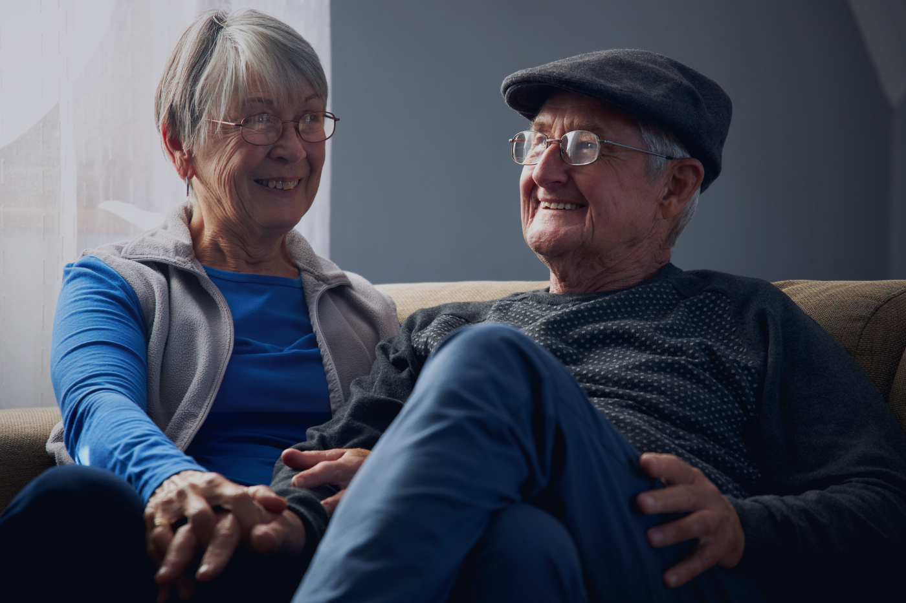

A História de Um Amor Abençoado
Unidos pela Fé e pelo Amor a Jesus Cristo


Um Legado de Amor e Fé
A história de Maria José e Antônio Elias é mais do que um simples conto de amor - é um testemunho do poder transformador da fé. Seu compromisso um com o outro e com Deus serve como inspiração para gerações. Eles nos lembram que, quando dois corações batem como um só no ritmo do amor divino, não há limite para o bem que podem realizar no mundo.
Seu legado continua a viver através das vidas que tocaram, dos corações que inspiraram e do amor que compartilharam. Maria José e Antônio Elias nos mostram que um casamento centrado em Cristo não apenas perdura, mas floresce, tornando-se um farol de esperança e amor para todos ao seu redor.